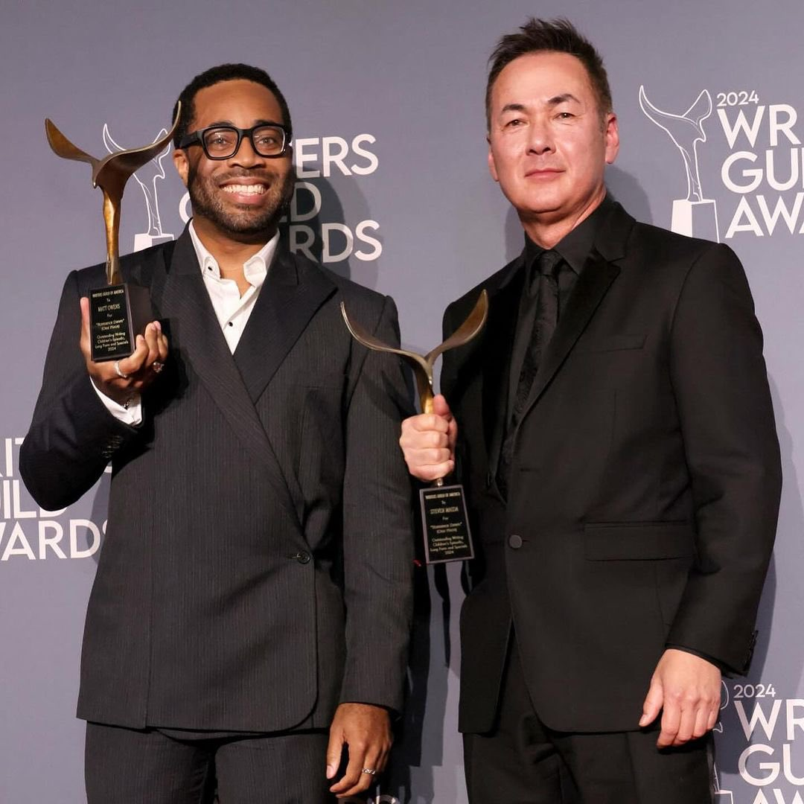

La serie sigue las aventuras de los Piratas de Sombrero de Paja ("Banda de Sombrero de Paja" en España) en busca del "One Piece", un tesoro legendario que convertirá presuntamente a su capitán, Monkey D. Luffy, en el "Rey de los Piratas". Pero la Marina está detrás de su barco y no son la única tripulación que busca el One Piece. Armados con sus habilidades y una amistad inquebrantable, los Piratas de Sombrero de Paja están listos para el viaje y para luchar juntos por sus sueños.
Eiichiro Oda trabajó como productor ejecutivo de la serie, junto con el director ejecutivo de Tomorrow Studios, Marty Adelstein, y la presidenta Becky Clements. Steven Maeda y Matt Owens fueron los showrunners de la primera temporada, trabajando como escritores y productores ejecutivos. Otros escritores incluyen a Diego Gutiérrez, Allison Weintraub, Ian Stokes, Lindsay Gelfand, Laura Jacqmin, Jason Cho, Damani Johnson y Tom Hyndman.
